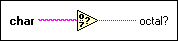

Octal Digit? Function
Owning Palette: Comparison Functions
Requires: Base Development System
Returns TRUE if char represents an octal digit ranging from 0 through 7. If char is a string, this function uses the first character in the string. If char is a number, this function interprets it as the ASCII value of a character. If char is a floating-point number, this function rounds to the nearest integer. Otherwise, this function returns FALSE.
The connector pane displays the default data types for this polymorphic function.

 Add to the block diagram Add to the block diagram |
 Find on the palette Find on the palette |